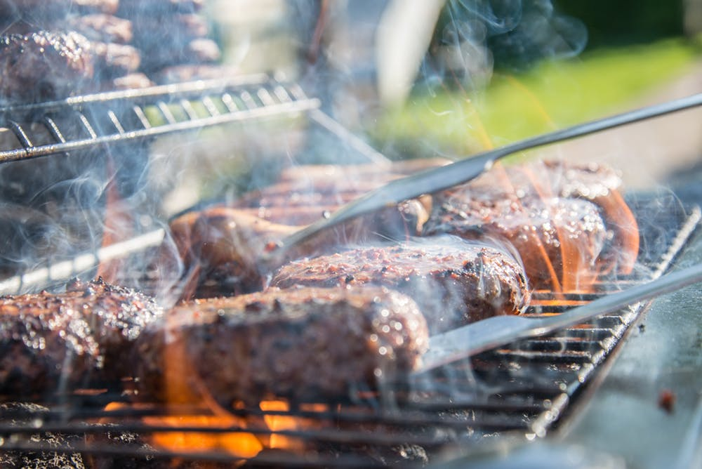
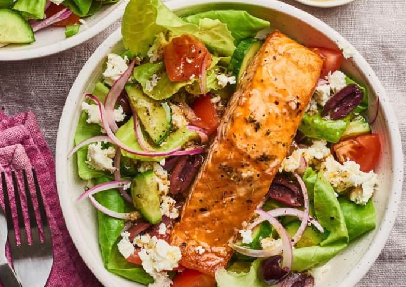
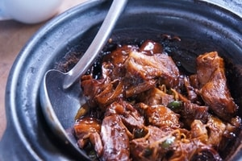
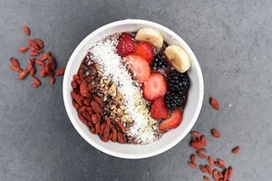
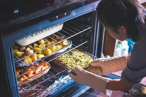
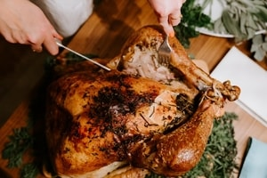
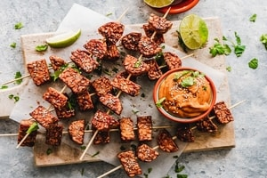
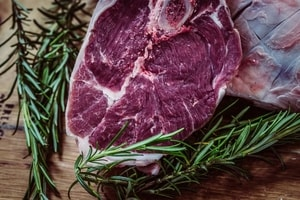

Better food, better mood
Recipes
Kitchn Love Letters
This One-Pan Mushroom and Steak Recipe Is Calling Your Name
Raise your hand if you're making this for dinner tonight! by Elizabeth Licata May 3, 2019

Next week's meal plan
Recipe: Walnut & Black Bean Veggie Burgers
The ingredients and technique that ensure success every time. by Kelly Foster May 1, 2019
Kitchn Love Letters
Next Week’s Meal Plan: A Week of Mediterranean Diet Dinners
Welcome to Next Week’s Meal Plan! I want to help you find inspiration and ease some of the pain points that come with getting dinner on the table night after night, whether you’re cooking for one or a family of eight. by Sheela Prakash April 24, 2019

Recommended for you





